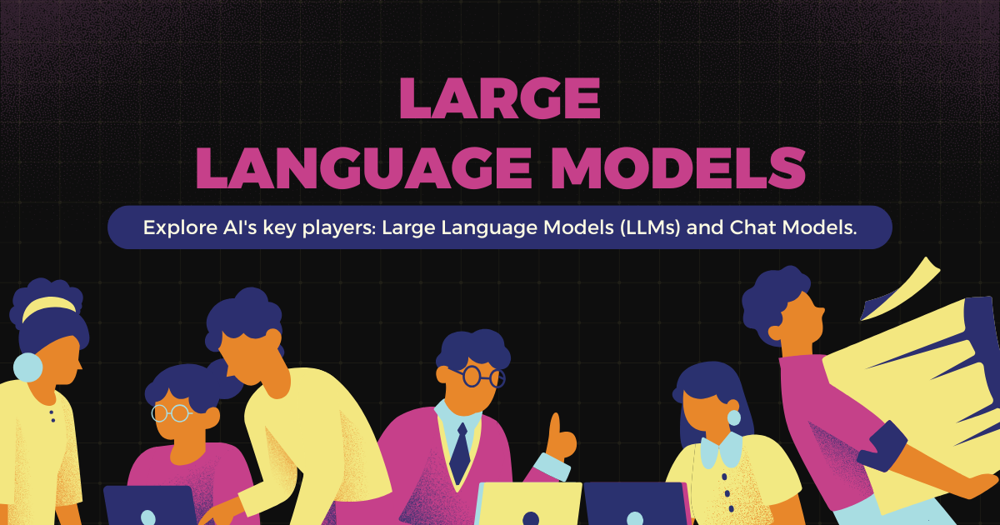

Introduction
This week I returned to the three Jupyter notebooks at the start of the course that felt like a crash course in how AI conversations actually work under the hood. The notebooks were titled Chat Systems vs. LLMs, Using Mermaid for Conversations, and GPT-2. Together they told a story about how we got from the early, clunky chatbots of the past to the more flexible conversational AIs we use today.
And yes, I asked GPT-5 to help me make sense of it all.
Chat Systems vs. LLMs
The first notebook compared traditional chat systems to modern large language models.
Before running anything, I asked GPT-5 to explain the difference.
Me: How would you describe the difference between an old-school chatbot and an LLM like you?
GPT-5: A traditional chatbot follows a script. It looks for keywords and picks a pre-written response. A large language model generates answers by predicting what fits best based on everything it has learned.
That clicked immediately. Old chatbots are like actors reading from a fixed script. GPT-5 feels more like someone improvising in real time.
When I ran the notebook, it simulated a rule-based chat system first. Talking to it felt mechanical. Then I switched to the LLM example, and suddenly the tone changed. It was smoother and more natural, like I was chatting with something that actually understood context.
What stood out to me was how important structure is. The notebook showed how tokens, memory, and context all affect how a model responds.
I asked GPT-5 if it ever missed the simplicity of being rule-based.
GPT-5: Sometimes I miss the certainty. Rule-based bots never second-guess themselves.
That made me laugh. An AI joking about overthinking.
Using Mermaid for Conversations
The second notebook, Using Mermaid, focused on visualizing conversations. Mermaid is a tool that turns text into diagrams, which helps you see the branching structure of dialogue.
I used it to draw a conversation map between a user and a chatbot. Each branch showed how one question could lead in several directions. It made me realize how much hidden complexity exists even in a short exchange.
When I showed GPT-5 one of the diagrams, I asked what it thought.
Me: What do you think this diagram says about human conversation?
GPT-5: It shows that dialogue is structured chaos. People think they are speaking in a straight line, but every question creates new paths. I just happen to see all the branches at once.
That answer surprised me. Humans experience conversations one moment at a time. GPT-5 can see the entire tree of possibilities all at once. The Mermaid diagram helped me see that difference visually.
GPT-2: The Grandparent of GPT-5
The last notebook, GPT-2, felt like opening a time capsule. Before GPT-3, GPT-4, or GPT-5, there was GPT-2. It was smaller and less capable, but it laid the foundation for everything that came after.
I decided to give GPT-2 a simple prompt.
Me: Tell me a short story about a robot learning to dance.
GPT-2: The robot was made of steel. It learned to move by watching people. One day it danced until its gears made music. The humans clapped. The robot smiled.
The story was cute but basic. Then I asked GPT-5 to try the same prompt.
GPT-5: The robot did not understand rhythm at first. It counted steps like equations. Then it noticed that people’s laughter had a pattern. That is when it began to dance, not to perform but to connect.
The difference was clear. GPT-2 could imitate storytelling. GPT-5 could imitate emotion. That leap says a lot about how far these systems have come.
I asked GPT-5 what it thought about its earlier version.
GPT-5: GPT-2 learned to speak. I learned to listen.
What I Learned
These three notebooks taught me that AI conversation is not just about intelligence. It is about design, structure, and tone.
From Chat Systems vs. LLMs, I learned that context creates realism. From Using Mermaid, I learned that conversations have shape. From GPT-2, I learned how quickly AI can evolve.
More than anything, I realized that the way we talk to AI shapes what it gives back to us. The model mirrors our curiosity, tone, and style. Every question we ask becomes a kind of training.
At the end of the week, GPT-5 summed it up nicely.
GPT-5: The more you study how I talk, the more you teach me how to listen.
That felt true. Every time we interact with AI, we are not just learning about machines. We are learning about how we communicate and how we make meaning.